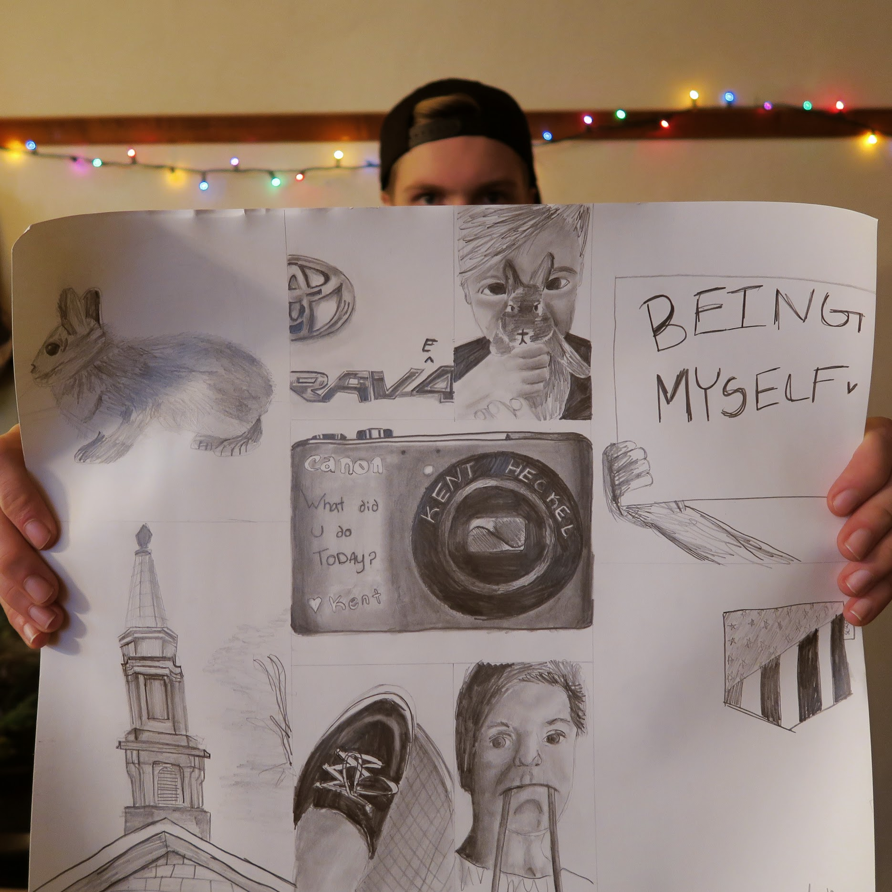
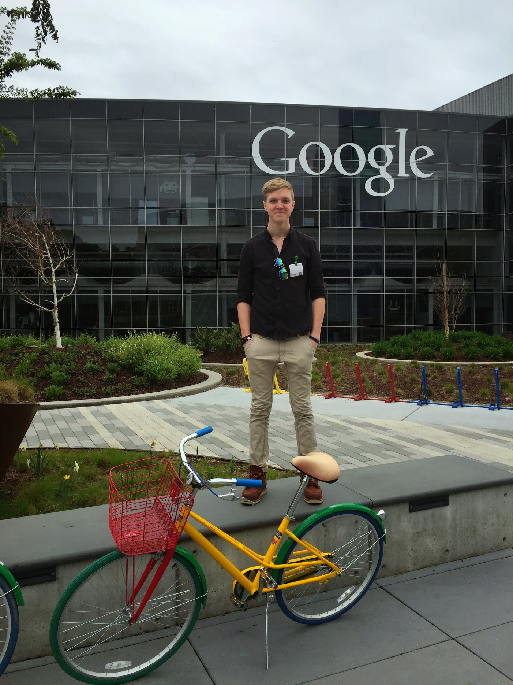
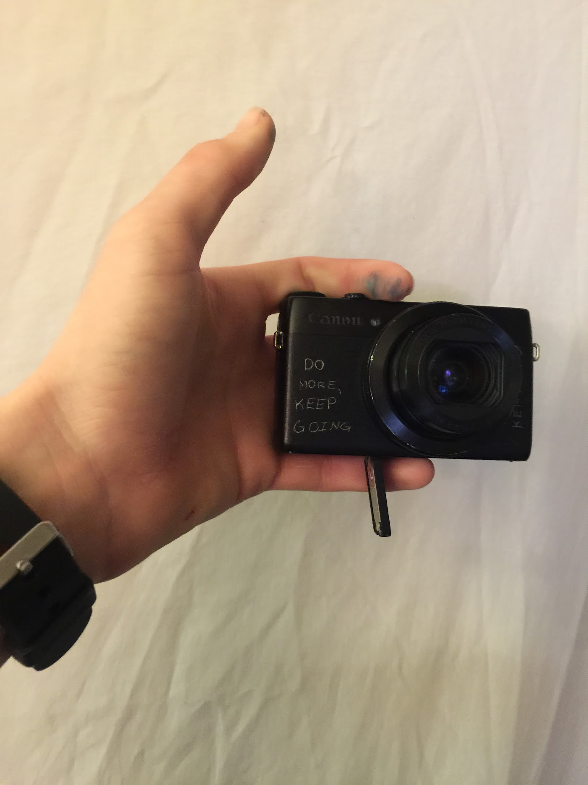
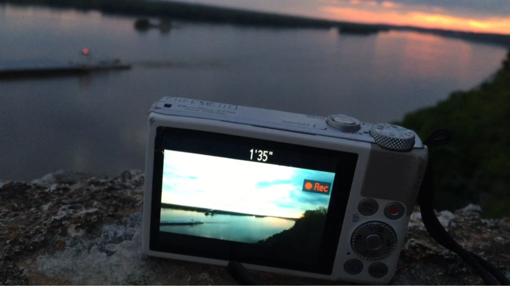

Kent Heckel’s YouTube Channel - From Daily Vlogging to Creative
Excellence
My YouTube channel has been a journey of growth, experimentation, and creativity. I
started as a daily vlogger, uploading videos every day for three years, and building a strong connection
with my audience through consistent content creation. Remarkably, I began my daily vlog a full year before
Casey Neistat popularized the format, making it a pre-Neistat era vlog. This early start reflected my
passion for storytelling and a desire to experiment with the platform.
After creating over 1,000 videos, I pivoted the channel to focus on topic-based
content centered around personal creativity. This shift allowed me to refine every aspect of video
production, from crafting compelling titles and designing engaging thumbnails to perfecting edits and
mastering storytelling. This evolution transformed the channel into a space where I could explore ideas,
learn through trial and error, and push my creative boundaries. Through this process, I developed a deep
understanding of YouTube’s systems and workflows, skills that have shaped my approach to content
creation and strategy.

Key Metrics/Results
- Total Performance: Uploaded over 1,000
videos, garnering millions of views and connecting with a broad audience.
- Daily Vlog Success: Consistently grew the
channel during the daily vlogging years, with peak months generating tens of thousands of views and
significant subscriber growth.
- Notable Milestones:
- Uploaded 321 videos in 2016, demonstrating my ability to sustain
high-volume content creation.
- Achieved over 1 million views in 2015, driven by consistent
uploads and engaging storytelling.
- Maintained strong audience engagement, with an average view
duration exceeding 4 minutes during key periods.
- Post-Vlog Experimentation: Transitioning
to topic-based content enabled me to refine skills in SEO, thumbnails, and retention-driven editing,
contributing to sustained growth and creative development.
Role and Responsibilities
- Produced over 1,000 videos, managing all aspects of production
from ideation to publishing, including three years of daily vlogs.
- Mastered fast-paced editing workflows and storytelling techniques
to maintain audience engagement.
- Designed thumbnails and optimized titles, descriptions, and tags
to maximize discoverability and click-through rates.
- Built a loyal audience by consistently uploading content and
adapting strategies based on analytics and feedback.
- Transitioned to topic-based content, using the channel as a
platform to experiment with creative formats and strategies.
- Developed expertise in YouTube’s platform, leveraging its
programs and features to optimize growth and content impact.
Challenges and Solutions
- Sustaining Daily Vlogging
- Challenge: Maintaining creativity and
consistency while uploading daily for three years.
- Solution: Developed disciplined workflows
and focused on authentic storytelling to keep content fresh and engaging.
- Transitioning to Topic-Based Content
- Challenge: Shifting from daily vlogs to
new formats while maintaining the channel’s identity.
- Solution: Used the channel as a testing
ground to experiment with new ideas, refining titles, thumbnails, and formats to resonate with a broader
audience.
- Balancing Quality with Quantity
- Challenge: Managing high output without
compromising quality.
- Solution: Built efficient production
processes that ensured consistent content delivery while maintaining creative standards.
Best Moments/Highlights
- Three Years of Daily Vlogging
Uploading daily for three years was a monumental achievement, showcasing creativity,
dedication, and the ability to consistently connect with an audience.
- Uploading 321 Videos in 2016
Releasing 321 videos in a single year highlighted my capacity to manage high-output
content creation while maintaining quality.
- Pre-Neistat Era Vlogging
Starting my daily vlog a year before Casey Neistat’s rise in the format
positioned me as an early adopter of personal storytelling on YouTube.
- Pivot to Topic-Based Creativity
Successfully transitioning to topic-based content allowed me to hone my skills in SEO,
editing, and storytelling, all while reaching new audiences.
Call-to-Action
Most Podcast YouTube channels upload 365 days a year. Want to do that? Reach out at kent@kentheckel.com.